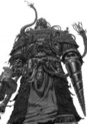

| On a presque finit la première partie; 35 ko de textes! Vous vous rendez compte? |
Sommaire
- 1 Ere Antique
- 2 Règne de Chiumbo Bokara [24/03/308 ETU / 20/04/308 ETU]
- 3 La Joyeuse Anarchie [20/04/308 ETU / 17/04/308 ETU]
- 3.1 La Régence du Commandant EL Coco [ 20/04/308 ETU / 04/05/308 ETU ]
- 3.2 La Régence d'Antimat [ 04/05/308 ETU / 14/07/308 ETU ]
- 3.3 La Pairie, enfin une Union d'Aurore ? [ 14/07/308 ETU / 17/10/308 ETU ]
- 4 Le Gouvernement Bicéphale pour Aurore [ 17/10/308 ETU / 24/01/309 ETU ]
- 5 The Happy Anarchy Returns [ 24/01/309 ETU / ../../... ETU ]
Ere Antique
Quatre cycles étaient passés, lorsque arriva le premier commandant, El Coco, à l'Assemblée Galactique. Etait-ce le premier à posséder la communication galactique ? Nul ne le sait. Les commandant(e)s Ker Zagan, Holly, Ab Skyh, Chiumbo Bokara, Algren Gorry et Usushesha le suivirent peu de temps après.
De nouveaux commandants affluaient à l'Assemblée, ambassadeurs de nouvelles cultures et religions. Les débuts du commerce apparaissaient en la personne des commandants gorgias, sam254, Ab Skyh et gothmog.
Première Tentative de Démocratie

Ce fut le commandant Ab Skyh, qui en premier proposa une démocratie lors de sa déclaration à l'AG: Création d'un lieu de politique locale en secteur I. Et, alors que peu de peuples étaient représentés à l'Assemblée, la proposition tomba à l'eau. Fallait-il attendre la prise de la capitale pour parler politique ?
Premier Conflit en secteur I
Du moins chacun restait dans son coin. Il fallut atteindre le début de petits conflits entre natifs de secteur I, pour voir un réveil des peuples. La première guerre de la contrebande eu lieu dans le secteur I. Le commandant Ab Skyh ne supportait plus la taxe imposée par le commandant Lambda sur la contrebande. Avec son « éloquence » habituelle, il décida de lui apprendre la politesse en engageant un mercenaire. Il recruta alors à coup de quelque millions de leems le Commandant Chiumbo Bokara qui, après avoir récupéré la contrebande, et l’avoir restitué au Commandant Skyh, finit par entamer légèrement le territoire du vaincu, pour dommages de guerre, provoquant le suicide de celui-ci.
Conflit en secteur II
Le premier des conflits en secteur II commença également par une affaire de contrebande. Le commandant Sam 254 ème du nom prit grâce a l’aide de son allié Scaumut la contrebande du secteur II. Il engagea alors un mouvement pour donner des institutions au secteur, mais la mise en place d’un vote pour décider des taxes provoqua une tollé de la part des commerçants. Dont la réaction du commandant Gothmog, ralliant à la cause de la non taxe quelques uns des natifs du secteur II. La colère des commerçant provoqua alors une augmentation de la taxe, rendant impossible les échanges, et handicapant les plus puissants commerçants du secteur. Pour ces raisons, le commandant Algren Gorry, allié au guildéen Lyne Musica s’emparèrent de la contrebande. Gorry la remit tout d’abord à Lyne Musica, puis la récupéra imposant une taxe de 10%, deux fois plus importante que celle de Sam254. Cette situation révolta le commandant Gothmog, en pleine création d’une nouvelle Guilde Commerçante avec le commandant Ab Skyh. Il décida donc de frapper fort avec le discours J'accuse!. Alors que Musica ne répondait à aucune de ses demandes. Gothmog rassemblait autour de lui une puissante confédération, rassemblant alors une bonne partie des commandants qu’il approvisionnait en armes et ressources, mais aussi le commandant Leir le guildéen le plus puissant du secteur II grâce à ses bénéfices tirés de la vente d’énergie. La commandante Morphée et sa coalition Lition rejoignirent aussi le mouvement. Alors que le discours provoquait de nombreuses réactions à l'Assemblée, que les flottes hostiles se rassemblaient dans les systèmes, au dessus des planètes, la tension était alors à son comble dans le secteur II, et nombre de provocation fusait dans les deux camps. La guerre se résumait à l’alliance derrière Gothmog contre Gorry et Musica.
La guerre fut évitée grâce à l’intervention de Leir, qui ne put se résoudre à voir cette guerre qui se promettait particulièrement meurtrière. Il contacta Gorry afin de relancer le processus de paix, le remettant en contact avec Gothmog. Après d’âpres discussions, une paix fragile fut convenue, une taxe à 0% en temps de paix fut décidée et une taxe de 5% en temps de guerre. C'est ce que fit Algren Gorry jusqu’à l’expatriation du Commandant Sam et du Commandant Scaumut du secteur. Ces deux commandants purent trouver refuge dans le Secteur V grâce à l’aide d’âmes charitables. Ce conflit eut de lourdes incidences sur les relations galactiques. Les grandes alliances se créèrent dès ce moment.
Second Conflit en secteur I
Un autre conflit apparut dans le secteur I, on aurait cru à un réveil de l'Ordre Renégat. Deux d'entre eux auraient dû rester coucher vu le manque de maitrise et de finesse les caractérisant. Tout ceci ne servit qu'à renforcer l'opinion (déjà mauvaise) d'Aurore sur les renégats et à exterminer l'un d'entre eux.
Le 19/03/308 ETU, les scientifiques de la WECC(World El Coco Company) découvrirent les premiers la fusion extrasectorielle, accordant un avantage sans précédent à son possesseur. La colonisation des secteurs 0 et IX commençait.
Règne de Chiumbo Bokara [24/03/308 ETU / 20/04/308 ETU]

Le Règne de Chiumbo Bokara pouvait être considéré par une Monarchie libérale (voir les Institutions d'Aurore mise en place pas Chiumbo Bokara)car bien que chef auto-proclamé de la Galaxie, le roi n'avait ni levé d'impôt ni entravé la liberté d'expression. Ce monarque avait cependant dicté lui même une constitution marquée du bon sens commun quoique clairsemée. Il avait par exemple institué des représentants sectoriels chargés de lui transmettre les doléances des commandants, ceux-ci pouvaient également promulguer des lois sectorielles. Le 1er Roi d'Aurore avait également lancé le processus d'ensemencement technologique. Ce processus avait permis à de nombreux petits commandants de quitter leur isolationnisme et d'acquéir pour des sommes modiques les technologies des palier 1,2 et 3(suivant les conventions galactiques).
Elections sectorielles
Le Roi Bokara avait, dès son entrée au pouvoir, demandé aux peuple étant en possession des Contrebandes dans chaque secteur d'organiser des élections. Les dirigeants de ces peuples devaient inviter les natifs de leur secteur dans le but de les informer de la mise en place d'un scrutin et pour connaître ceux qui seraient intéressés par le poste de représentant sectoriel. La période de candidature serait de 7 cycles et l'élection de 3 cycles. Le mandat du représentant devrait durer 90 cycles .Dans tous les secteurs sans exceptions, les élections furent préparées et se déroulèrent dans la bonne ambiance. Après les 10 cycles utiles aux élections, on eut la liste des représentants: le secteur 0 fut représenté par le célèbre commerçant Ab Skyh; le secteur I par Usushesha; le secteur II par Gothmog; le secteur III par Dame Ortile; le secteur IV...; le secteur V par le commandant Recri; le secteur VI par la coalition Léviathan; le secteur VII par ...; le secteur VIII par Andy Maxwell; le secteur IX par le commandant El Coco et finalement le secteur X par Anton Veil.
Le génocide en secteur IV [de 31/03/308 ETU / 12/04/308 ETU]
Chiumbo Bokara avait eu au moins le mérite de maintenir l'ordre dans Aurore. Au côté de sa coalition Antimat à laquelle appartenaient Ab Skyh, Usushesha, El Coco, Ryak, Borric et Gothmog, Chiumbo Bokara avait permis la Pacification du secteur IV qui était en proie à un génocide perpétré par la Triade Taupine composé des commandants de la Fédération Dirigiste Zak'lug, Drooxy et gigaltz. Ces trois personnages avaient envahi la majorité des territoires du secteur pendant la nuit du 30 au 31 mars 308 ETU par surprise sans aucune déclaration de guerre. De nombreuses jeunes civilisations moururent sur le coup et ne purent même pas s'exprimer à l'Assemblée Galactique du fait de leur niveau technologique insuffisant.
Tout fut préparé avec soin, les membres de la Triade Taupine avaient commercé en paix dès le début avec les jeunes nations commerçantes et avaient ainsi endormi la méfiance des empires en pleines expansions. La Triade y alla en douceur, elle envahit tranquillement les planètes indépendantes laissant peu de place pour les futurs victimes de s'aggrandir et de monter en puissance. Dans une naïveté totale les jeunes empires ne prêtèrent pas attention aux centaines de milliers de kamikazes de leurs prétendus alliés autour de leur planètes. Un jeu subtil à vrai dire, en échangeant les technologies gratuitement avec la Technocratie et le IIème Empire; le commandant Drooxy avait réussi à augmenter considérablement sa flotte de kamikazes en achetant à bas prix aux deux commerçants. Personne ne vit rien venir... Et puis tout commença d'un seul coup, sans prévenir. Les kamikazes tombèrent par milliers sur les jeunes civilisations (anecdote: l'Empire de Terrafie du commandant Tharqua perdit cette nuit ces principales planètes alors que ces colonies du système 8 résistèrent); le secteur IV, était riche de dizaines d'Empires, ce nombre se réduisit immédiatement à la dizaine. Le soir de l'attaque, les Empires les plus évolués réussirent à contacter l'Assemblée Galactique et à prévenir la Galaxie de la situation. Puis la contre-attaque fut déclenché rapidement; la Technocratie du Magos Arcanov avait une armée contrairement aux autres Natifs qui avait réussi à ameuter des escadres kamikazes suffisamment longtemps pour permettre à l'Empire de rallier une planète: Ponotland. Parallèlement, la Triade devait faire face au confin du secteur aux Natifs qui avaient tout perdu sauf leurs troupes; elle devait les traquer pour réduire ses harceleurs qui prenaient parfois quelques planètes dans leur retraite. Un commandant du nom de Pulsar Jim avait reçu une armada de quelques centaines de vaisseaux appelée en urgence par les extra-sectoriaux, celui-ci obligea la Triade à laisser des vaisseaux dans la zone pour éviter que ce premier ne recapture ses planètes.

Il est simple de capturer rapidement et efficacement des planètes, mais faut il ensuite les garder; la Triade souffra rapidement de "la folie des grandeurs", syndrome qui se traduit par les insurrections planétaires dues au patriotisme des habitants des jeunes civilisations.
En quelques cycles, la Triade avait capturé rapidement des centaines de mondes mais elle était ensuite divisée sur plusieurs fronts:
- le système 0 > Ab Skyh, Leir et Gothmog -amis commerçants des deux guildéens du secteur- avaient été les premiers à envoyer des troupes et des renforts aux Survivants.
- le système 1 et ceux de la Technocratie > système natale des techno-forces; pendant plusieurs cycles la Triade se cassa les dents à conquérir la Capitale des Technocrates. Ceux-ci reçurent des renforts permettant de revenir en force dans le système 1.
- le système 13> où se trouve Ponot, celle-ci ne fut jamais capturé par la Triade; dernières planètes de l'Empire. Cette planète permit aux VME d'Ab Skyh d'apporter des troupes militaires qui engagèrent la purge du secteur 13.
- les autres systèmes > les autres Natifs reçurent beaucoup d'aide divisant la Triade Taupine sur quatre fronts.
Le Magos Arcanov demanda l'aide de la WECC du commandant El Coco, celle-ci accepta contre un lourd financement; Gothmog et les autres commerçants négocièrent et réduisirent le dû à 3 milliards de £eems. Gothmog, Leir et Ab Skyh financèrent les deux tiers et le milliard restant fut payé en grande partie par la Technocratie, l'Empire et d'autres commandants. Ensuite arriva bien-sûr les troupes de la WECC, mais aussi de Borric, du roi Chiumbo Bokara et de beaucoup d'autres. Pendant une semaine et quelques cycles, la Triade Taupine résista mais finit par céder à cause des insurrections au sein de ses planètes fraîchement conquises et surtout à cause de la dispersion de ses troupes sur de nombreux fronts. Les piliers les plus faibles cédèrent: gigaltz et ensuite Drooxy (le premier fut décapité après le conflit sur Terrafie; malgré la pression que fit Tharqua pour pouvoir décapiter les autres, les alliés n'acceptèrent pas). Bien sur, la Triade tenta d'acheter la neutralité des commandants Borric et Ab Skyh qui étaient présents dans le secteur. Mais ces deux commandants ne tombèrent pas dans le panneau et entrèrent rapidement en guerre totale contre celle-ci. Conscient que ses heures étaient comptées, Zak'lug argumenta en invoquant sa nature de fédéraliste qu'il voulait respecter et qu'il était prêt à la paix [07/04/308 ETU]. Mais ses conditions avaient été vivement critiquées notamment par Tharqua et Magos Arcanov qui souhaitaient des sanctions lourdes à leur encontre. Dans l'impossibilité de trouver un accord les membres de la Triade furent tués pour mettre fin à la guerre. Les Survivants à savoir Tharqua, Magos Arcanov, Pulsar Jim, Le-Créateur, Mordren, ZooL et Pedro (les trois derniers furent reconnus tardivement grâce à un espionnage du commandant Ryak) se partagèrent le secteur avec leurs bons samaritains.
Le secteur IV est souvent considéré comme le secteur le plus paisible de la Galaxie, cette chose fut vraie avant le conflit et encore après; aujourd'hui, beaucoup cherchent refuge en son sein bien que seule la commandante Ortile fut accepté officiellement -Ystria a aussi été accepté il y a quelques temps à la place du grand Gothmog-. Pendant plusieurs cycles les Survivants débattirent et finalement le réorganisation fut terminée. Les plus gros Empires sont maintenant l'Imperium et la Technocratie, ensuite vient l'Empire de Pulsar Jim, du commandant Le-Créateur et de Mordren. Les autres Natifs moururent pendant la réorganisation. Trois systèmes furent donnés à Gothmog et à Leir, les autres extrasectoriaux ayant refusé poliment. Malgré cela, les extra-sectoriaux ont investi plusieurs dizaines de planètes dans le secteur au grand dam des Natifs bien que maintenant le secteur soit fermé par manque de place.
Les Natifs appelés Survivants (le secteur IV est aussi nommé le secteur des Survivants à cause du Génocide) sont, contrairement à la plus part des autres secteurs, très unis; cela est dû au combat qu'ils menèrent ensemble non pas pour une cause égoïste mais pour leur survie.
Opération Ponction de Jonction [11/04/308 ETU / 22/04/308 ETU ]
Le 11/04/308 ETU, après une séries d'empoignades tendues en Assemblée Sectorielle du Secteur VII, l'Emir Eniotna Trebila de l'Émirat des Étoiles publia une charte sectorielle, ou plutôt, une déclaration de guerre contre le Sanatorium de Jonction, dirigé par le Professeur Agrippa, faisant suite à la déclaration de guerre de ce dernier à l'encontre de l'Émirat deux cycles plus tôt. L'Emir était soutenu par un certains nombre de natifs du secteur VII, six d'entre eux avait signé cette déclaration de guerre : Les Commandants Rikor'f, Commandant, John Doe, Pahern, Azinus Carré et Spike Spiegel. D'autres se joignirent à eux, mais dans le plus profond secret, tandis que le Professeur Agrippa était rallié par la Commandante Orelia.
L'Opération Ponction de Jonction prit fin officiellement après une tentative de modération par le Commandant El Coco. Cependant, les discours et les actes ayant menés à la fin des hostilités furent pour la plupart stockées dans les Archives de l'Assemblée Sectorielle du Secteur VII, qui fut fermée par la suite. On sait juste que certains Commandants, natifs du secteur VII, intervinrent au sein de l'Assemblée pour plaider pour la paix et l'union du Secteur VII.
Contestation politique des dernières heures
Vers la fin du règne de Chiumbo Bokara, lorsque ses apparitions à l'Assemblée étaient devenues rares, un jeune commandant Flosilver85 eut le courage (ou la folie) de faire un discours très polémique contre le Roi. Ce ne fut pas sans provoquer des remous à l'Assemblée de nombre de collaborateurs du Roi, notamment Dame Usushesha, mais aucuns de l'intéressé. Cependant, il semble que cet acte permis le premier réveil des démocrates tel Ab Skyh, Gothmog ou Tharqua. Cependant peu de temps après le Roi disparut dans des circonstances inexpliquées.
Certains tels le royaliste Sirendor Larn ou le Commandant Tyrnis crurent voir dans la disparition du Roi un complot des Républicains. Mais l'histoire ne donnera pas suite à leurs palabres. Le Commandant Sirendor Larn a disparu depuis d'ailleurs...
La Joyeuse Anarchie [20/04/308 ETU / 17/04/308 ETU]
La Régence du Commandant EL Coco [ 20/04/308 ETU / 04/05/308 ETU ]
La disparition mystérieuse de Bokara laissait la Galaxie Aurore désorganisée et sans Assemblée Galactique. Mais rapidement le Commandant El Coco, proche de l'ancien roi et membre d'Antimat, réussit à reconquérir la Capitale Galactique.
La chute du roi avait aussi cristallisé les attentes des plus démocrates, la perspective d'un nouveau royaume semblait s'éloigner. Un référendum fut donc organisé pour savoir quel type de gouvernement les commandants d'Aurore souhaitaient...
Guerre Froide: Léviathan face à Antimat [ 21/04/308 ETU / 29/04/308 ETU ]
C'était un peu après la mort du Roi Chiumbo Bokara que Léviathan fut montrée du doigt par plusieurs commandants du Secteur VI et ses agissements peu orthodoxes montrés au grand jour. Elle était jusque là inconnue des autres commandants de la galaxie. C'était le Magister Corum qui fut le premier à souligner les attaques contre plusieurs jeunes nations, dont la sienne, de la part de certains membres de Léviathan dont surtout la commandante Manounne.
Manounne avait un air angélique et bienveillant, mais cela n'était que la face immergée de l'iceberg. En effet il se révella qu'elle avait une autre personalité plus noire encore, que même ses coalisés ne décelèrent que trop tard. Elle était fourbe et manipulatrice, elle était prête à tout pour arriver à ses fins, ce qui bien plus tard l'amena finalement à la sienne.
La coalition regroupa quelques Commandants natifs d'autres secteurs, comme : Algreen Gorry, déjà montré du doigt dans plusieurs affaires et guerres dans le Secteur II, qui avait rejoint les rangs de Léviathan avec son fidèle compagnon ; Lyne Musica. Grimgor, du Secteur III, vint se joindre, lui aussi, aux rangs de Léviathan. Ces alliances valut à Léviathan une puissance que peut ne purent égaler, mis à part Antimat. Cette dernière était une coalition regroupant majoritairement des natifs du secteur I: Ab Skyh, El Coco, Ryak, Borric et Usushesha et un natif du secteur II: gothmog. Elle avait été crée (le 21/04/308) juste après la mort du roi Chiumbo Bokara(20/04/308). Nombreux pensent que ces commandants s'étaient regroupés pour contrer la puissance grandissante de Léviathan.
Léviathan avait instauré un bouclier défensif empêchant quiconque de pénétrer sans autorisation dans le secteur, ce qui fut justifié comme une protection contre les commandants dis "Expantionnistes" et les guerres qui se profilaient dans les autres lointains secteurs de la galaxie, comme avec la Triade Taupine dans le Secteur IV. Mais ceci se rêvela être une parade afin d'agir en toute tranquillité.
Léviathan semblait inspirer la peur et la haine à toute la communautée Galactique. Le petit jeu des membres de Léviathan continuait tranquillement jusqu'au jour où Antimat décida d'intervenir en bon protecteur d'Aurore. Cela commença par la brillante intervention à l'Assemblée Galactique du Commandant Ab Skyh (CF : "Sous les ruines de Chiumbo... la guerre"), dénonçant les faits de plusieurs membres de Léviathan. John Rackham, fondateur de la coalition Léviathan arriva à l'assemblée et tenta de règler le conflit naissant par sa grande diplomatie afin de ne pas passer pour le mal absolut.

Déjà les troupes des deux camps se préparaient au combat. Des millions de vaisseaux de guerre en tout genre sortaient chaque jour des Industries d'Armement et restaient sur le pied de guerre en attente des ordres. Une course à la Technologie débuta, car elle allait déterminer l'issue du futur combat. Malgré l'avance d'Antimat sur le plan Technologique, Léviathan était puissamment armée et avait l'avantage d'avoir un Secteur très protégé à elle toute seule. El Coco et Ab Skyh avaient déjà lancé quelques attaques à titre défensif et se préparaient avec leurs coalisés. Antimat attaquait Léviathan dans les Secteurs I et II, faute de pouvoir prendre pied dans le Secteur VI grâce à Borric qui fut rapidement repoussé en dehors du Secteur.
John Rackham avait donné l'ordre à ses membres de ne pas attaquer directement leurs ennemis en dehors du Secteur VI, mais de lancer seulement quelques attaques défensives. Dans l'urgence, Léviathan prit dans ses rangs le fédéré Satanail, envoyé comme espion par Antimat afin de déstabiliser Léviathan. Léviathan avait vu une aubaine dans cette arrivée, car un fédéré en plus dans le secteur II n'était pas de trop. Léviathan comprit bien plus tard son erreur. D'autre part, la résistance s'organisait dans le Secteur VI avec les commandants Faery, Magister Corum et Arkhange dans une taverne sur la capitale Tok Râ avec aussi des membres d'Antimat. Ils envisagèrent d'engager des actions militaires contre Léviathan dans des systèmes clés, avec en parallèle une attaque frontale d'Antimat, ce qui ne vit jamais le jour. Les 3 commandants résistants du secteur VI sont devenus ensuite une Coalition, Calliope.
C'est alors qu'au grand dam des compagnons de John Rackham, Manounne disparut, laissant un grand nombre de planètes vierges dans le Secteur VI et surtout priva Léviathan de son principal Guildéen. Suivi la trahison de Satanail qui déroba le trésor de la coalition, grâce à son statut au sein de la coalition. Celui-ci permit en une opération éclair le transfert de 48 Milliards de leems(assez conséquent pour l'époque) par les vaisseaux marchands d'Ab Skyh. Cet évènement se rajoutant à la disparition de Manounne laissa la coalition amputée et affaibliée. Suite à cela, Léviathan expulsa Leir de la Coalition. Son amitiée avec le commandant Gothmog avait fait de lui le responçable de la perte des £eems de Léviathan, ce qui fut bien entendu une erreur de plus de leur part.
Léviathan n'était plus de taille à combattre, elle fut donc contrainte de capituler devant Antimat. Les négociations et les conditions de la reddition débuta. Léviathan s'engagea à se séparer de ses membres qui n'étaient pas natifs du Secteur VI et à redistribuer les planètes de la coalition et de feu Manounne aux habitants du secteur. Le tout se déroula sous les yeux attentifs d'Antimat. Léviathan n'a jamais reconnu ses fautes par fierté et la moitié de ses commandants furent privés du 1/3 de leurs possessions du Secteur VI. Seul quelques commandants, dont le fondateur John Rackham malgré son implication dans l'affaire jusqu'au cou, s'en sortirent sans trop de problèmes.
Léviathan se divisa alors en deux parties : La partie mère contrôlant toujours plus où moins le Secteur VI : Léviathan. Et Métal Klinkant, coalition où se sont rejoint les membres ayant quittés Léviathan, contrôlant le Secteur III et une partie du II, ce qui leur permit de reprendre du poil de la bête et de préparer la contre attaque contre Antimat. Ce qui n'eut jamais lieu à cause des futurs débordements de Grimgor et de Lyne Musica dans le Secteur III.
Le partage du Secteur VI fut fait avec l'aide des natifs du secteur, dont le commandant Arkhange. Dès lors, Léviathan se terra dans le silence et se fit oublier de tous pour mieux revenir, ce qui ne se passa pas. La galaxie venait d'échapper de peu à une Guerre qui aurait duré plusieurs dizaines de cycles et engendré des dégats collatéraux énormes. Les membres de Léviathan ne furent jamais jugés pour leurs crimes et certains continuèrent leurs vices en toute impunitée.
Suivi la disparition de El Coco (le 04/05/308 ETU) et d'Ab Skyh (le 11/05/308 ETU) qui mit en émoi toute la communauté Galactique ainsi que certains de leurs anciens ennemis. John Rackham ne put pas s'empêcher, le jour de la disparition d'Ab Skyh, de repenser aux talents de danseur de l'incroyable commandant prêt à tout pour 1 seul £eem (CF : "J'accuse!"). Comme John dit un jour à Ab : "Les Ennemis peuvent se faire la guerre, se respecter et boire un Rhum ensembles". Ce que Borric fit en lui offrant une pinte de Bière.
La Régence d'Antimat [ 04/05/308 ETU / 14/07/308 ETU ]
Les Années Folles [ 04/05/308 ETU / 25/06/308 ETU ]
La disparition de El Coco émut profondément l'Assemblée Galactique, mais la disparition de la W.E.C.C. laissa aussi de nombreux territoires sans gouvernement notamment dans les secteurs 0,I,IV et IX. La Galaxie entra alors dans une ère d'insouciance. A l'initiative des commandants Tharqua et Flosilver85, un vote pour savoir qui des peuples d'Aurore souhaitaient la démocratie. Le résultat était sans appel 17 souhaitaient la démocratie, 8 n'en voulaient pas. Mais lorsque Ab Skyh disparut à son tour ce fut une véritable déferlante d'hommages poignants qui fut retransmise à l'Assemblée..
Les péripéties de l'Assemblée Constituante

Après que le vote se fut déroulé, l'Empereur Tharqua créa sur Terrafie une Assemblée Constituante; avec l'aide de Flosilver85, de Gothmog et de Leir (principaux démocrates d'Aurore), ils mirent sur pieds deux formes de Constitutions:
- Une République de type présidentielle par Tharqua
- Une Res Publica de type parlementaire par Gothmog
Puis s'enchaina débat sur débat; face à la complexité d'un régime Républicain les démocrates s'éternisèrent et n'arrivèrent pas à trouver une constitution commune. A vouloir trop bien faire, à essayer de doser au millimètre les affectations des pouvoirs la lassitude arriva. Le paroxysme fut atteint lorsque l'Assemblée Constituante tellement paralysée fut désertée.
Les monarchistes et autres critiquèrent de plus en plus les Républicains, notamment Tharqua qui fut offensé et énervé. Celui-ci n'aimait pas que l'on critique sans proposer autre chose. Dans un excès de rage et pour réveiller les démocrates endormis, Tharqua lança un vote pour savoir qui vraiment souhaitait une République et annonça ce qu'il allait faire si ce vote démocratique s'avérait contre les Républicains. Finalement, il y eut une victoire des républicains (18 étaient pour, 16 contre et 9 n'y attachait pas d'importance) mais Tharqua éprouvé décida quand même de fermer l'Assemblée Constituante.
Des Guerres en chaine
Devant l'inactivité politique de la majorité de la galaxie, en secret des plans de guerre se préparaient. L'industrie lourde fonctionnait à plein régime. Des fanatiques conditionnaient les esprits à la haine du voisin, de l'autre. Des officiers entraînaient des jeunes recrues au pilotement des vaisseaux de types Kamikazes...
Crise diplomatique et croisade Helionnienne
Un évènement des plus inattendus fit sensation à l'Assemblée, et il sera lourd de conséquences. En effet, un groupe de rebelles sous la domination hélionnienne avait réussi à faire passer une vidéo, qui fut rapidement retransmise à l'Assemblée, révélant des abominations pour les plus faibles d'entre nous ou pour d'autres une simple formalité. Il n'empêcha que les réactions furent vives de la part du Président Flosilver, qui fut profondemment choqué par le vrai visage que cette vidéo montrait de la Technocratie. Le Véolien avertit qu'il ferait tout son possible pour aider ces "pauvres" gens à renverser le pouvoir en place et lança un appel aux autres peuple afin de créer un embargo sur l'Empire Hélionnien. Le commandant Magos Arcanov réfuta les dires de Flosilver85 et plaida sa cause dans la liberté pour chacun d'administer son Empire comme bon lui semble. Il fut appuyé par Tharqua et Usushesha à l'Assemblée. Cependant le président ne lâcha pas prise, et offrit l'asile à tous les groupuscules sous domination hélionnien sur Véolia, l'opposant ainsi diplomatiquement à la Technocratie. Magos Arcanov utilisant d'abord la voie diplomate demanda au peuple Véolien de bien lui rendre les rebelles et d'arrêter de les accueillir chez lui. Cependant Flosilver85 refusa et poursuivit l'accueil des réfugiés. La situation dégénéra très vite, et Magos Arcanov après avoir consulté les Oracles, envoya sa IIème Flotte de Guerre purifier les hérétiques sur le sol Véolien. Chaque planète sous contrôle des Techos-Adeptes sera purifier(tous les terroristes seront éliminés), ensuite les planètes seront évacuées et cédées au peuple Véolien. A l'Assemblée Galactique, Flosilver85 comprit bien le dilemme qui s'offrait à lui: soit livrer les réfugiés politiques et éviter un conflit ou bien refuser et mettre tout son peuple en péril. Il décida donc de mettre ce choix difficile entre les mains du Parlement Véolien. Il appela son allié Tharqua, pour devenir arbitre dans ce conflit. Celui-ci allié aux deux peuples, se déclara neutre dans le conflit tant qu'aucunes actions contre ses flottes ou ses planètes n'avaient été commenditées par un des deux belligérants. La Purification avait déjà commencé lorsque que fut décidé un cessez-le-feu pour négociations. En effet, les combats furent très meurtriés et les défenses planétaires surpassèrent de loin les flottes hélionniennes, les combats se passèrent alors principalement dans l'espace. Dans le vide stellaire, la Technocratie reprit l'avantage sans provoquer une victoire décisive sur les Véoliens. Le conflit s'éternisa, et ce fut Véolia qui lâcha en premier et proposa des négociations. Négociations qui se finirent en armistice entre les deux belligérants. On apprit bien plus tard, que ces négociations cachaient l'envoi d'une forte somme de la part de la République Véolienne à la Technocratie. Le grand Magos Arcanov accepta le montant non sans-joie, le moral était au plus bas parmis les Techno-Forces dans ce conflit qui ne semblait pas s'arrêter.
La grande Guerre du secteur III
...
Menace Tyrannide
Les tyrannides sont une espèce insectoïde extragalactique puissante, barbare et guerrière. Originaire de Dactylis, elles ont ravagé toute leur galaxie en l'espace d'une seule nuit ! Seuls ont survécu quelques Dactyliens, dont le Cdt Xénos, lui-même infecté et en début de phase d‘assimilation. Heureusement, la cryogénisation de ce dernier a permis de stopper le processus. Les survivants ont donc quitté Dactylis, entièrement ravagée et infectée, pour migrer vers Aurore.
Mais dans le secteur VII, le Cdt Xénos fut gardé en secret sur la Base Delta M11, jusqu’à ce qu’un Cdt attaque cette planète et détruise les systèmes de contrôles. La planète fut assimilée en très peu de temps, toutes les chambres de cryogénisation ayant été ouvertes. La menace était maintenant en Aurore, et si personne ne faisait rien, les dégâts seraient énormes.
On peut dire avec certitude donc, que le premier cas fut repéré par les forces Dactyliennes sur la Base Delta M11. En effet, plus aucune nouvelle n’émanait de cette base, l'invasion Tyrannide avait commencé. Le pire allait alors arriver ...
Un seul PC dans le système 11 restait sous contrôle, mais le système 18 semblait être touché et d'autres encore. Il était temps pour le Général Krâken d’annoncer la nouvelle : le Cdt Xénos n’était pas le Cdt Xénos ! Il fit une intervention à l'Assemblée de son secteur pour demander de l'aide à d'autres peuples. Les réponses étaient favorables...le secteur avait encore une chance d'en réchapper. Avec l'aide de ses co-sectoriels, le Général réussit à retenir la prolifération de cette race dans les autres systèmes, cependant combien de temps encore allaient-ils tenir ? L’infestation grandissait et alors que tout espoir avait presque disparu et que la résistance commençait à diminuer, les scientifiques Dactyliens découvrirent l'arme qui selon eux serait le tournant de la guerre: le rideau électro-magnétique à ondes infra-soniques. Cet armement permettait d’envelopper une planète d'ondes, ce qui empêchait les Tyranides de la quitter.
Mais l’arme la plus efficace fut sans doute le développement d’un générateur personnel d’ondes infra-soniques. Ce générateur fut implanté sur le Cdt Xénos, puis ce dernier fut ramené à un état conscient. Dès lors, l'assimilation tyranide du Cdt Xénos était stoppée, tant que ce générateur fonctionnerait … En même temps, ce dernier avait développé une sorte de pouvoir télépathique qui semblait lui permettre de contrôler ces créatures à distance ! A son réveil, il changea de nom pour se faire appeler Hivetyrant !, Seigneur HiveTyrant ! Il se trouvait maintenant génétiquement à mi-chemin entre un humain et un Prince Tyranide !
Mais le plus important était que la "Menace Tyrannide" avait été éliminée, ou plutôt "contrôlée, car un système était toujours déclaré « en quarantaine »,le système natal des Dactyliens, et donc la source de l'infestation tyranide, le système 11 !
Entre Piratage et trahison, la guerre en secteur 10
Tout commence lorsque le 07/06/308, SPY16 se dit avoir été piraté par le Baron Borgnefesse...
Une vengeance bien préparée

Le commandant Arkhange avait préparé son plan depuis bien longtemps (Vengeance). Le 18/06/308 il fut prêt, opération Vengeance. Arkhange souhaitait faire payer à HiveTyrant ! le meurtre de son ami Amadeuss. L'épisode n'était plus d'actualité pourtant Arkhange l'avait toujours présent à l'esprit. Dans une opération organisait avec une quasi perfection, les flottes Tok Râ prirent en une vague la totalité des mondes Dactylien dans le secteur VI. Privant le restant des forces Dactyliennes de base logistique et de point de ralliement. S'ensuivit des débats houleux à l'Assemblée sur le bien fondé de cette vengeance. Les flottes Tok Râ et Dactyliennes s'opposèrent en secteur VI et IX. Les pertes furent lourdes des deux côtés. HiveTyrant ! envahit trois planètes sous contrôle Tok Râ à l'aide de ses escadres kamikazes. Cependant malgré la perte de plus d'un million d'homme chez les Tok Râ, les Dactyliens en perdirent plus du double. Un évènement changea complètement la donne, alors que les escarmouches continuaient, Antimat la coalition du commandant Arkhange proclama la Restauration (Et la Restauration fut déclarée (25/06/308)) et l'arrêt des conflits actuels. Le dirigeant Tok Râ dû se plier aux exigences de sa coalition, et demanda un cessez-le-feu au commandant HiveTyrant !. Ce dernier, qui ne se déclarait pas en guerre, accepta. Le général des Armées Tok Râ présenta au peuple Dactylien l'ébauche d'une proposition d'Armistice:
- A)Dans le secteur VI:
- I)Cessation des hostilités
- II)Don de la planète(sous contrôle Dactylien) Zeta 3 M au commandant Tanaruck
- III)Evacuation des flottes Dactyliennes du secteur VI
- IV)Flottes civiles Dactylienne acceptées en pc1 du système 0
- B)Dans le secteur VII:
- I)Cessation des hostilités
- II)Evacuation des flottes Tok Râ du secteur VII
- III)Flottes civiles Tok Râ acceptée en pc1 du système
- C)Dans le secteur IX:
- I)Cessation des hostilités
- II)Don des planètes(sous contrôle Dactylien) Astyish et Sanyn au peuple Tok Râ
- III)Don de 3 milliard de £eems au peuple Dactylien

Toutes ces propositions furent acceptées à l'exception des clauses A)II; C)II; C)III. Arkhange refusa d'emblée et demanda aux Dactyliens de proposer eux-mêmes un Armistice. Ce qu'ils ne firent pas, par contre ils réclamèrent un délai de 7 cycles maximum pour que leur dirigeant HiveTyrant ! viennent s'exprimer à l'Assemblée. Le délai écoulé, le représentant Tok Râ s'est indigné du silence des Dactyliens. Après cette intervention des Tok Râ, le prince Tyran répliqua que les négociations s'arrêteraient là si le peuple Tok Râ n'acceptait pas l'armistice modifié. Les négociations se terminèrent, mais il n'y eut aucune suite du côté Tok Râ.
Le Retour d'Antimat sur le devant de la scène [ 25/06/308 ETU / 14/07/308 ETU ]
Pendant plusieurs semaines, il régnait en Aurore une joyeuse anarchie; même si Antimat était toujours au pouvoir, il n'assumait plus ses fonctions de régent, trop occupé à essayer de résoudre de nombreux conflits. Cette anarchie se développa de plus en plus à un tel point qu'Antimat dû réagir pour faire cesser des guerres inutiles et de remettre un peu d'ordre dans tout çà... Devant cette incroyable anarchie, Dame Usushesha, une des fondatrices d'Antimatet porte-parole de celle-ci, décida de frapper haut et fort: elle déclara la Restauration de la monarchie (Intervention:Et la Restauration fut déclarée (25/06/308)) et qu'un nouveau roi serait élu au sein d'Antimat. Tout cela ne fut pas sans provoquer des grands remous à l'Assemblée, il faut dire que Usushesha employa un langage cru pour que les commandants s'impliquent dans la vie politique d'Aurore. Certains acclamèrent le retour de la monarchie comme la commandante Tyrnis ou Absynth Medusa alors que d'autres non. Flosilver85 ainsi que le cdt Wookie Rikor'f firent des discours très républicains contrairement au commandant Agrippa qui lui utilisa sa célèbre rhétorique pour critiquer Antimat et sa Restauration rapide.
Au sein Antimat, quelque chose d'intéressant se préparait...
Une tournure intéressante
Antimat fit un discours qui précédait le projet qu'il présenterait une semaine après la susdite prise de parole (cf: L'avenir d'Aurore est l'affaire de tous); pendant ces 7 jours, les peuples d'Aurore qui voudront participer à la vie galactique devront envoyer leur représentant à l'Assemblée d'Aurore, ceux n'ayant pas respecté ce délai seront bannis. Il s'enchaîna plusieurs discours polémique sur Antimat et ses membres jusqu'à ce que le Président Flosilver 85 diffuse sans autorisation le projet de la coalition avant son représentant; celle-ci c'est dit saboté par le Président de Véolia qui apparement avait un espion en son sein. On découvrit plus tard que cela fut faux, c'était un fait des membres Rikor'f et John Doe de Perfecta qui étaient au courant de ce projet par les membres d'Antimat qui espéraient leur donner des postes dans la futur régence.
Personne ne sut jamais en Aurore que la Taupe n'était autre que le Professeur Agrippa qui espèrait détruire totalement la crédibilité de Antimat... Flosilver semblait avoir été utilisé mais finalement, cela lui avait permis de se venger d'Antimat qui n'était selon lui plus digne du Grand Ab Skyh auquel ils devaient tout.
Le silence de la coalition n'arrangea rien pendant cette période estivale, Antimat décida finalement de se retirer de la vie politique d'Aurore au plus grand damne de certains de ces membres...
Le Second conflit Véolio-Hélionien

Cf: voir le premier conflit Véolio-Helionnien.
Après l'arrêt des conflits, une paix stable s'était instaurée entre les deux belligérants mais cela n'était pas vraiment fait pour durer...
Un espion avait livré des informations sur Antimat au Président Flosilver, la Technocratie du Magos Arcanov avait été soupçonné de trahison par les Fondateurs de la coalition ce qui était, on le découvrit plus tard, totalement faux et le véolien avait aussi reprit sa guerre diplomatique contre la Grande Machine.
Le Magos n'eut d'autre choix que de reprendre les armes et d'attaquer le peuple de Véolia pour peu de raisons mais cela permit de laver l'affront de la 1ère guerre qui était perçus comme une défaite du peuple Helionnien.
La Technocratie, forte de sa première expérience, envoie des troupes en conséquentes et usent de la technologie ionique arrivé depuis peu dans l'arsenal des techno-forces en capturant rapidement les planètes du Flosilver (5 planètes dans le système 3 secteur 10) sans trop subir de pertes.
S'en suit les massacres des populations jugés hérétiques (qui étaient les membres du culte réformé de la Grande machine) par le Magos mais le reste de la population ne subit que peu de privation et reste relativement tranquille mais vit néanmoins à des années lumières de la démocratie libérale Véolienne sous des gouvernements collaborateur traditionalistes. Les mondes "purgés" devaient être ensuite libéré mais le refus farouche d'accepter le marché Hélionnien fit entrer rapidement la République Véolienne dans une guerre totale contree l'assaillant.
Coup de théâtre côté Véolien, le Président Flosilver85 prend des mesures jugés désespérés et kidnappe le représentant Technocrate Darioq pour étudier les Techno-adeptes et peut-être leurs permettre de les rendre à nouveau humain. ce qui aura des conséquences dramatiques pour la Présidence: 10 milliards d'innocents furent lobotomisé par les techno-forces. Cependant, les recherches permirent de trouver le moyen de régénéré les corps des techno-adepte ce qui aurait permis de soigner à grande échelle les Techno-adeptes.
Ce mouvement permis néanmoins de faire basculer la balance du coté du Président; la Technocratie se met au dos plusieurs cdts après ce massacre de populations innocentes qui prennent les armes en faveurs de Flosilver.
Les cdts Hivetyrant ! et Borgnefesse amis de longues dates des Véoliens entre en guerre contre la Technocratie sous contrats de mercenariat à prix d'ami..
Avec la puissance conjugué des deux alliés mercenaires et de Véolia, le rapport de force s'inverse et la Technocratie commence à reculer vers ces bases initiales en secteur 10.
La guerre a duré trop longtemps et le peuple Helionnien doit entrer en période de recueillement afin de prier ainsi que d'introniser les nouveaux adeptes de son culte ce qui donnera le ton final de la guerre.
Cette période doit-être pour les Technocrates exempte de tout conflit ce qui entraîne un replit massifs des techo-forces qui cessent les opérations offensives et privilégient la défense. Non seulement les forces militaires fuit le secteur 10, mais en plus les mondes capturées sont rendu à flosilver de manière à respecter le dogme de la Grande Machine le jour du début du recueillement.
Il est à noter que quelques affrontements mineurs persistent entre les technos-forces et le cdt Jim West qui profite à la fois du repli des Technocrates et du début de la période de recueillement pour envahir certain monde périphériques de la Technocratie.
Actuellement, les armes ont cessé de parler entre les belligérants et un traité est en préparation visible à l'Assemblée Galactique d'Aurore; la guerre est donc théoriquement finis et si le traité voit le jour, pourrais mettre fin au conflit de manière durable...
La Pairie, enfin une Union d'Aurore ? [ 14/07/308 ETU / 17/10/308 ETU ]
La voix alternative de Perfecta
Dans Les Pairs de la Galaxie, la coalition Perfecta représenté par les cdts Rikor'f et John Doe annonça la création d'un gouvernement nommé "Pairie" composé par des "Pairs"; ces Pairs ont des devoirs et des droits, un Gardien y sera élu chargé de "régir" tout cela. Rikor'f encouragea les prises de paroles et les questions, cela ne se fit pas attendre où ce premier et John Doe eurent tout leur temps d'expliquer et de compléter la présente constitution.
Le cdt Tharqua en profita pour dénoncer ce qu'il appelait un gouvernement "non-libéral" et valoriser le commerce d'armes; il envoya ensuite les banquiers de l'Imperium, les Bansalches, qui firent de la publicité pour la banque Impériale et ils proposèrent leur aide qui fut apparement refusé.
Polémique: Antimat doit-elle garder la Capitale Galactique?
Le commandant Whiser fit une déclaration à l'Assemblée Galactique d'Aurore pour poussez ces confrères et consœurs à prendre par la voie diplomatique la Capitale Galactique à la coalition Antimat en créant un vote; divers membres de la Pairie dont le cdt Rikor'f ainsi que d'autres votèrent pour que cette Capitale revienne auprès du Gardien qui n'était pas encore élu à se moment là.
Mais les principaux membres d'Antimat déclarèrent que celle-ci ne cédera pas la Capitale pour plusieurs raisons:
- l'élection du gardien n'étant pas encore faite, on ne peut débattre de cela maintenant
- Antimat a toujours bien défendu la Capitale Galactique contre les intrusions extérieures
- Antimat reste le meilleur moyen de défense de la Capitale et comme le Gardien ne pourra pas posséder de vaisseaux de guerres il lui sera impossible de la protéger efficacement
- Les membres d'Antimat sont les seuls à décider du sort de la Capitale
Un débat chez les Pairs se déroula pour savoir l'avenir de la Capitale Galactique; certains Pairs désignèrent les nécessités pour que le Gardien la possède:
- pouvoir d'envoyer plus facilement des communiqués gouvernementaux
- possibilité de simplifier le système d'impôt pour les Pairs qui pourraient être mis en place
Les membres Pairs d'Antimat ripostèrent en disant qu'il suffisait d'envoyer un message aux Fondateurs de la coalition pour envoyé des messages gouvernementaux et de faire simplement un virement au gardien pour les impôts.
Finalement, ce débat n'eut pas vraiment réellement une fin; Antimat garde toujours la Capitale Galactique au plus damne de certains même si le vote fait à l'AG donna raison à ceux qui voulaient prendre la Capitale (8 pour que la Capitale ne bouge pas de main, 12 pour que celle-ci revienne au Gardien -20 voix en tout-)...
Conflit entre les Empires Terrafien et Dactylien

Le 28/07/308 ETU, le commandant Tharqua rallia en secteur IV, système 7 une quizaine de planètes appartenant au cdt HiveTyrant !; la réaction de ce dernier fut très vive. Il envoya un utlimatum à l'Empereur lui ordonnant de rendre sans condition l'ensemble des planètes capturées sinon une destruction massive des vaisseaux et la capture totale des planètes en dehors du secteur IV.
Silence de la part de Tharqua, aucune réponse n'avait été communiquée pendant la semaine suivant cette date. On sut que cela était dû à une rupture totale des communications depuis la planète Capitale Terrafie.
Le cdt HiveTyrant ! mit donc à exécution son ultimatum, une vague de kamikases et de vaisseaux de guerres déboula sur les planètes Impériales du système 4 ainsi que la capture des colonies de l'Imperium et la destruction des sondes d'explorations à l'extérieur du secteur en question. Le cdt Jim West participa à cette attaque coordonnée en capturant quelques mondes de l'Empire. Mais les alliés de l'Empereur vinrent à sa rescousse pour demander qu'aucunes attaques n'ait lieu. Trop tard ! Le chef de l'Empire Dactylien avait déjà commencé les invasions sur plusieurs mondes, cependant il réussit à en éviter de nouvelles.
L'Empereur Tharqua résolut finalement le conflit avec le cdt HiveTyrant mais ne réussit pas à retrouver les planètes qu'il possédait à l'origine, certaines ayant été reconverties pour dédommagement et d'autres s'étant rebéllées puis faites capturer par des cdts avides de planètes fraîches. Le commandant Tharqua avait en faite lancé les ralliements par des Vaisseaux Diplomatiques avant que ces planètes fussent capturées par le Dactylien, la rutpure des communications impériales n'arrangea rien les choses.
Il restait maintenant un problème à résoudre pour Tharqua: le cdt Jim West qui avait capturé plusieurs planètes à l'Empire et qui continuait à le faire. L'Empereur essaya donc de porter des accusations à ce cdt comme quoi il n'avait pas respecté la constitution de la Pairie (Jim West étant un Pair), son Serment et la demande de Rikor'f pour éviter que les Pairs ne se mêlent de ce conflit. Cela ne fonctionna malheureusement pas pour Tharqua qui envoya donc un com-x à Jim West pour récupérer ses planètes; cette fois-ci, ce cdt accepta et cette histoire fut résolue pour de bon même si cela aurait pu déclencher une guerre meutrière...
Le Bilan un mois après le commencement de la Pairie
Après un Mois d'existence la Pairie compte 14 commandant (Cf Institutions d'Aurore pour voir le fonctionnement de la Pairie)...
Stagnation
La Pairie avait stagné depuis un long mois; la cause? La période estival que la plupart des cdts d'Aurore étaient plongés. Toujours pas d'organisation réel concernant la défense d'Aurore-le principal but de la Pairie- et surtout pas de Gardien élu par les Pairs. Qu'en fallait-il y penser? Certains crurent à l'agonisation de la Pairie d'autres à cette période où avait été créé cette Union.
Mais les cdts qui faisaient serment d'allégence continuaient toujours à signer: la plupart des membres de Perfecta, quelques membres d'Antimat ainsi que des cdts indépendants ou de coalions diverses.
Le stade final approchait, l'ouverture des portes inter-galactiques allaient se faire par la découverte de la fusion extra-galactique en premier par les membres d'Antimat, en deuxième par le reste de la Galaxie... Les Extra-Galactiques allaient bientôt rentrer dans Aurore; pour le meilleur... et pour le pire.
Reprise des Activités après cinq semaines de relâchement
Note de l'auteur: ce sous-sous-sous-sous-chapitre concerne principalement la Pairie.
Vers le milieu du mois d'août ETU, Rikor'f fut élu au plus grand étonnement de tous "Gardien de la Pairie" avec comme seul adversaire edifrep d'albion. Parallèlement, la polémique sur la Capitale Galactique arriva chez les Pairs avec comme seul résultat des longs discours qui ne furent suivis d'aucunes décisions puisque tous les points de vues étaient défendables. Le cdt Tharqua rejoignit la Pairie et critiqua vivement la politique économique proposé par Flosilver. On se mit rapidement à préparer la défense galactique, les Extras n'étaient plus très loin...


Tout s'accélerra vers la fin de 08/308 ETU avec l'ouverture des portes inter-galactiques: le cdt Ryak fut le premier à posséder l'hyperfusion extra-galactique et ainsi Aurore découvrit qu'il existait 4 autres galaxies peuplées elles aussi. Plusieurs commandants commencèrent donc à bombarder la porte galactique d'Aurore, cela fut contesté par la majorité des Guildéens qui voyaient cela comme l'isolation économique d'un secteur et l'impossibilité de spéculer sur la contrebande de celui-ci. En parlant des Guildéens, ceux-ci avaient mis en place sous la tutelle de Tharqua la Guilde Commerçante, union guildéenne qui donnait à ses membres le label qui était en faite la garantie d'un service qualité/prix irréprochable d'après eux. La Guilde fut contestée par le cdt Flosilver85 qui voyait en elle une menace économique pour le client.
Une brigade de surveillance des EG (Extra-Galactique) fut mis en place par le binôme Magister Corum/John Doe (très célèbre car l'un fait parti d'Antimat et l'autre de Perfecta) et secondée par des alliantistes chargés de surveiller les mouvements de flottes des EG. Cette surveillance fut organisée dans chaque secteur où il devrait y avoir au moins une forteresse planétaire possédé par l'un des membres du binôme, chacun se répartissant une zone de surveillance sauf pour le secteur 0 où les deux personnages du binôme assurait une surveillance plus forte.
L'arrivée des premiers extra-galactiques étaient maintenant un fait en Aurore, la plupart des peuples EG se présentèrent et demandèrent des ambassade dans la galaxie; grâce aux divers témoignages de ces voyageurs, la Pairie réussit à savoir qui devait-être ou non régularisé. Les EG qui possédaient une ambassade étaient régis par deux lois non-négociables:
- interdiction de construire des flottes militaires et diplomatiques
- interdiction d'améliorer les défenses planétaires
Des centaines de milliers de kamikazes et de mécanoïdes étaient présents au dessus de ces mondes.
Pendant le mois de Septembre ETU
Il se passa beaucoup de choses pendant cette période:
- le Gardien Rikor'f voulut bannir Tharqua de la Pairie car celui-ci n'avait pas une grande foi en son serment
- celui-ci se découragea rapidement de la Pairie et devint alcoolique
- l'EG Anne Bonny fit une grande fête de retrouvailles avec Drusilla
- le couple West/Drusilla assez détesté par la plupart des ctds d'Aurore se renforça grâce à l'arrivée d'Anne Bonny
- Drusilla ne reconnut pas ses hackages sur la Technocratie du Magos Arcanov alors qu'elle avait été en flagrant délit; en vengeance, Arcanov aida des Renégats à hacker Drusilla...
- la Guilde Commerçante améliora son fonctionnement et mit sous embargo Floislver85
Mais nous allons nous concentrer sur un événement majeur qui s'est produit.
Borric est devenu fou
Personne ne s'inquiétait du fait que l'un des fondateurs portant le nom de Borric de la coalition Antimat transféra la Capitale Galactique à son royaume, ce personnage étant très réputé. Mais cela devint un peu plus grave quand il bannit tous les ctds d'Aurore de l'Assemblée en proclamant haut et fort dans Antimat "la capitale est à moi!". Mais heureusement l'écuyer du roi, Marcius, malgré sa fidélité raconta ce qui s'était passé aux membres d'Antimat: Borric était atteint d'une grave maladie et s'était réfugié dans le poste de commande de la Capitale.

La galaxie tomba ensuite dans le chaos malgré l'appelle au calme de la part des membres d'Antimat; la Pairie voulait engager des actions offensives contre les mondes du roi fou et récupérer la Capitale Galactique comme le cdt HiveTyrant ! qui fut lui un peu plus violent.
Antimat informa qu'elle allait tout faire pour récupérer l'Assemblée Galactique et que le peuple de Borric n'y était pour rien en racontant tout. Les armées des autres fondateurs lancèrent un siège de la Capitale et firent d'importantes commandes en énergie et en métaux aux Guildéens de la coalition; le Magister Corum lança 10 millions de kamikazes sur la Capitale sans succès, on ne pouvait pas dire qu'Antimat avait lésiné sur la défense.
Marcius ne pouvant régir le peuple de l'ancien roi, il scinda le royaume entre les différents membres de la coalition. Ces derniers s'étaient proposés de prendre sous leur protection plusieurs monde qui était sous la menace de répressions vengeresses. Cela fut prit comme un complot des membres d'Antimat par ceux de la Pairie. HiveTyrant était prêt à lancer ses forces à l'assaut mais il arriva trop tard.
En effet Le Magister Corum envoya finalement ses vaisseaux diplomatiques s'emparer de la Capitale. Cette opération réussit, le moral était au plus bas dans la population après l'attaque éclair des kamikazes. Depuis c'est lui qui l'a possède, il se déclara ensuite Gardien de la Capitale Galactique au nom d'Aurore. Le système de la Capitale s'est depuis ouvert aux membres de la galaxie et HiveTyrant avait l'air de regretter amèrement le fait qu'il n'avait pu s'emparer de cette planète de malheur, source de conflits en tous genre.
Conclusion
Cette guerre affaiblie grandement Antimat et donna une plus grande puissance au binôme Magister Corum/John Doe; les bombardements ioniques avaient aussi proliférer pendant cette période et certains Guildéens firent d'énormes bénéfices grâce à la vente et à la revente. Le cdt Ryak s'était retiré de la vie diplomatique en Aurore ainsi que tous son royaume après la mort de Borric (NB: le royaume de Borric subsiste remarquablement encore aujourd'hui en la personne de Marcius) à l'Assemblée Galactique.
Il ne restait plus qu'une fondatrice d'Antimat: Usushesha, cette coalition d'ailleurs n'a plus un poids important dans la galaxie et ces membres commencèrent ainsi sa mutation qui était nécessaire à sa survie.
La Paire: bonne idée mais un échec de plus
Il n'y avait pas de meilleur idée que celle-ci: une union pour la protection d'Aurore. Mais malgré un bon début les dissensions intérieures la perdit; Tharqua et Flosilver85 avec Rikor'f qui s'aimaient comme chien et chat, le couple Drusilla/Jim West qui n'améliorait en rien la situation et malgré les essais infructueux pour appaiser la situation de la part binôme Corum/Doe, la Pairie devint de plus en plus vide.
Il y avait toujours les rapports des Pairs et de la Brigade de Surveillance sur les EG ainsi qu'un modeste échange technologique, mais rien d'autre à la fin du mois de septembre; beaucoup considérait la Pairie comme un échec monumental, comme quoi ce ne sont pas toujours les meilleurs idées qui surpassent les autres.
Celle-ci avait essayer d'unir en une seule famille les cdts mais la rancœur était toujours trop grande entre les deux blocs: Perfecta et Antimat.
La Pairie avait voulu courrir trop vite et était maintenant essoufflée...
Peut-être reviendra-t-elle sur la scène galactique? Peu probable vu qu'une autre organisation va voir le jour dans très peu de temps: un gouvernement galactique dirigé par le Binôme Corum/John Doe mais celui-ci réussira-t-il à unifier Aurore par la paix et même par les armes...surtout que les Guildéens opposent déjà une résistance? Seul le temps nous le dira...
Le Gouvernement Bicéphale pour Aurore [ 17/10/308 ETU / 24/01/309 ETU ]
Le binôme John Doe, Magister Corum établirent un vote de confiance dans l'Assemblée Galactique. Le résultat fut sans appel, sur les 36 votants il y eut: 75% de voix favorables 14% de voix contres 11% de voix nulles
Aurore vivait un tournant politique. Le binôme ne tarda pas à dévoiler une constitution gouvernementale(Institutions d'Aurore)
Balbutiements constitutionnelles
Le Gouvernement
...
Constitution
...
Haute Cours
...
Songe/Aurore: amour toujours
...
L'Opposition
...
Jugements en chaînes
...
Drôles de ministères
...
Retour à la case départ
...
The Happy Anarchy Returns [ 24/01/309 ETU / ../../... ETU ]
(L'Anarchie Joyeuse Revient) ...
| Ces Chroniques ont été rédigées par Gothmog, Flosilver85, Arkhange, Tharqua et quelques autres bénévoles. N'oublions pas aussi tous les autres RôlePlayistes d'Apocalypsis qui ont pu agrémenter l'histoire d'Aurore de situations cocasses et anecdotiques. |